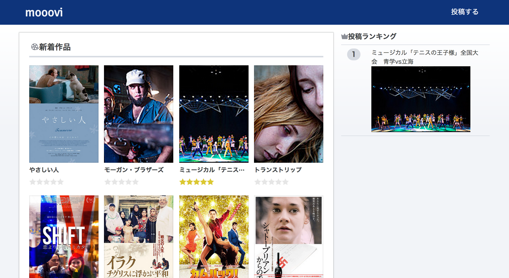
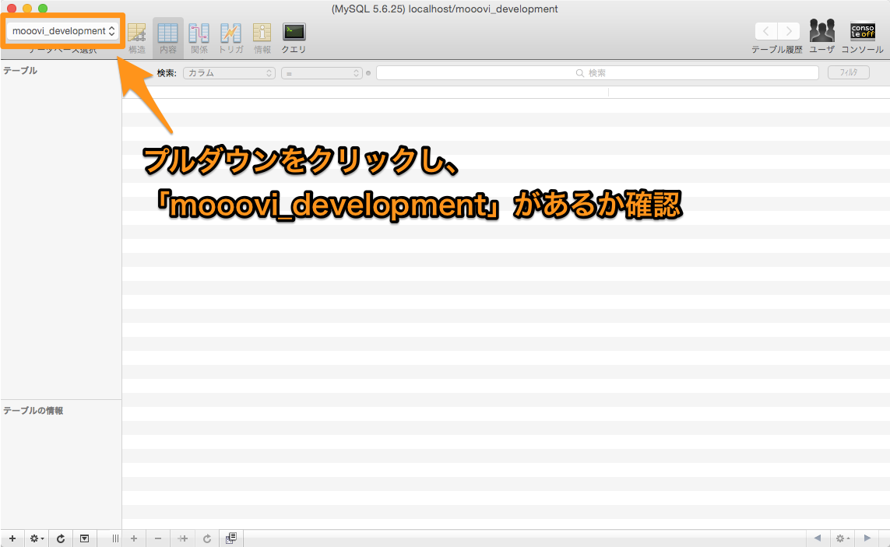
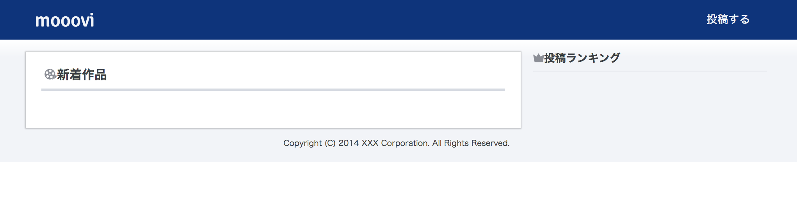

この学習は、1章で学んだ知識を使って基本的なRailsアプリケーションを開発し、発展として様々な追加機能を付けていくという形で学習を進めていきます。
今回作るアプリケーションは「mooovi」という名前の映画レビューサイトです。
これは自分が見た映画のレビューを投稿することができ、他の人のレビューも見ることができるアプリケーションです。
映画レビューサイトmooovi

以下のリンク先に完成形のアプリケーションがあります。ぜひ一度使ってみてください。
※Basic認証が掛かっています。
ユーザ名: tcamp
パスワード: master
Gitを使って、アプリケーション開発の事前準備をしよう
アプリケーションを開発していく上で、アプリケーションを配置するディレクトリや、必要なファイルを準備していきます。
1 2 3 4 5 |
$ cd ~/projects
# 「projects」ディレクトリに移動
$ pwd
# 現在のディレクトリのパスを表示
|
この学習で使用するソースコードはGithubというサービスに上がっています。それをPCにダウンロードするために、git clone(クローン)という操作をします。
Gitはソースコードの変更履歴、バージョン等を記録するツールで、開発する際には必須といえるツールです。FacebookやGoogleなどの有名企業も開発の際には利用しています。
ここでは詳しくは述べませんが、githubはチーム開発やソースコードの共有にとても便利なサービスでfacebook等有名な企業も活用しています。自分のソースコードを保管できるためエンジニアの履歴書のような役割も果たしています。
git clone コマンドは、外部のサーバーにあるGitで管理されたソースコードを自分のパソコン（ローカル環境）にダウンロードするコマンドです。実際に使用する際にはgit clone リポジトリURL ディレクトリ名という形でターミナルで実行し使用します。
以下のように【例】と書かれたコードは実際に打ち込んで試す必要はありません。あくまで参考用です。
1 2 |
$ git clone リポジトリURL ディレクトリ名
# ソースコードをクローン
|
lsコマンドはlinuxコマンドの一種です。lsコマンドを使用すると、現在のディレクトリにあるファイルを表示することができます。ちなみに、lsは「list segments」の略を意味しています。
1 2 |
$ ls
# 現在のディレクトリにあるファイルを表示
|
アプリケーションは「~/projects」ディレクトリで管理しているので、そのディレクトリにcloneを行ないます。
1 2 3 4 5 6 7 8 |
$ cd ~/projects
# projectsディレクトリに移動
$ git clone https://github.com/we-b/mooovi.git -b for_curriculum mooovi
# ソースコードをクローン
$ ls
# 現在のディレクトリにあるファイルを表示し、「mooovi」というファイルがあるか確認
|
アプリケーション開発をする上で、ファイルの分け方(ディレクトリの構成)は重要になってきます。
それぞれ、役割ごとにディレクトリを分けて、開発者自身やチーム内でわかりやすいディレクトリ構成を作ることで効率化を図ることが出来ます。
SublimeTextで「command + o」ボタンを使用することによってディレクトリごとファイルを開くことができます。今回のアプリケーションは「ユーザー名/projects/mooovi」です。
| 番号 | 内容 |
|---|---|
| ① | アプリケーションコントローラー |
| ② | 作品情報を扱うコントローラー |
| ③ | サイドバーのコントローラー |
| ④ | レビュー情報を扱うコントローラー |
| ⑤ | トップページ用のビューファイル |
| ⑥ | 検索用のビューファイル |
| ⑦ | 作品ページ用のビューファイル |
| ⑧ | レビュー投稿用のビューファイル |
まだアプリケーションをgitからクローンしてきただけなのでサーバーを立ち上げようとすると、エラーが起きてしまいます。まずはアプリケーションを自分のローカル環境で実行することができるようにしましょう。
今回作成するアプリケーションもgemを使用します。そのため、前もってgemをインストールしておく必要があります。gemをインストールするコマンドはbundle installでしたね。
コマンドを打つ前にmoooviのディレクトリに移動しましょう。
1 2 3 4 5 6 7 8 |
$ cd mooovi
# 「projects」ディレクトリから、「mooovi」ディレクトリへ移動
$ pwd
# 現在のディレクトリが「/Users/ユーザー名/projects/mooovi」であることを確認
$ bundle install
# Gemfileの内容に従ってGemをインストール
|
まずはデータベースを作成します。
本章を進めていく中で、ターミナル上で「rails ~」や「rake ~」というコマンドを実行することがあります。
その際は、必ず接頭にbundle execという文字をつけて実行してください。
bundlerを利用してインストールしたgemは、Railsの各プロジェクトではなく、Rubyのバージョンごとにある保存場所にインストールされています。
bundle show [gemの名前]というコマンドを実行するとbundlerでインストールしたgemがどこに保存されているのか確認することができます。
試しに、railsがどこに保存されているのか確認してみましょう。
bundle show rails コマンドを実行すると、railsの保存場所を確認することができます。
1 2 3 |
$ bundle show rails
/.rbenv/versions/2.1.3/lib/ruby/gems/2.1.0/gems/rails-4.0.4
# bundler によって保存されるgemの保存場所を表示
|
bundle installを実行した際、bundlerは先ほどの保存場所からrailsプロジェクトのGemfileに書いてあるgemだけを読み込み、使える状態にしてくれます。
bundle exec は2つ以上のrailsアプリケーションを同じバージョンのRubyを利用して作成している際に必要となるコマンドです。
rakeコマンドやrailsコマンドなどはそれぞれrake、railsというgemによって使うことができますが、
開発しているプロジェクトが2つ以上ある場合に「rake db:migrate」などのコマンドを打ち込んでしまうとエラーが起きることがあります。
これは同じRubyのバージョンで複数のアプリケーションを開発していると、同じ名前のgemでもアプリケーションごとにバージョンが異なることがあるためです。
例えばアプリケーション1とアプリケーション2の両方をRubyのバージョン2.0で開発しているとします。
アプリケーション1をターミナルでrake db:migrateしたい際には、bundle execコマンドを接頭につけてrakeコマンドを実行すると、Gemfileで指定した環境下のrakeのコマンドとして実行されます。
1 2 |
$ bundle exec rake db:migrate
# 必ず最初に bundle exec をつけて実行する。
|
1 2 |
$ bundle exec rake db:create
# データベースの作成
|
上記のコマンドによってconfig/database.ymlの設定に基いてデータベースが作成されたはずです。
Sequel Proでデータベースがきちんと作成されているか確認しましょう。
きちんと作成されていたら、「mooovi_development」「mooovi_test」の２つのデータベースが表示されるのを確認することができます。

これでサーバーを起動する準備が整いました。ではmoooviのディレクトリでサーバーを起動してみましょう。サーバーを起動させるためのコマンドはrails sでしたね。
1 2 |
$ bundle exec rails s
# サーバーを起動
|
サーバーが正しく起動できていれば、以下の様な出力結果が表示されます。
1 2 3 4 5 6 7 8 |
=> Booting WEBrick
=> Rails 4.1.6 application starting in development on http://0.0.0.0:3000
=> Run `rails server -h` for more startup options
=> Notice: server is listening on all interfaces (0.0.0.0). Consider using 127.0.0.1 (--binding option)
=> Ctrl-C to shutdown server
[2014-10-10 21:20:15] INFO WEBrick 1.3.1
[2014-10-10 21:20:15] INFO ruby 2.1.2 (2014-05-08) [x86_64-darwin13.0]
[2014-10-10 21:20:15] INFO WEBrick::HTTPServer#start: pid=8328 port=3000
|
サーバーを立ち上げたのでhttp://localhost:3000で映画レビューアプリケーションにアクセスできるようになったはずです。

以上でアプリケーションを作成するための前準備は終わりました。次の章から実際にアプリケーションの作成を行っていきましょう。
お疲れ様でした！このカリキュラムの終わりに確認問題を解きましょう。
 大宅 誠人
大宅 誠人